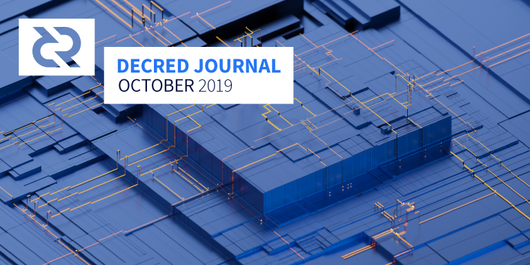

Decred月报 - 2019年10月

图片: Source Relay by @saender
十月重点:
- 核心软件v1.5的RC1版本已准备好进行测试。主要更改包括：增加共识规则更改投票模块，以增加区块头承诺；挖矿基础设施（dcrd），隐私保护（dcrwallet），闪电网络集成和UI调整（Decrediton）以及移植大量的上游更新（dcrlnd）。
- i2 Trading在提案通过之后，已开始在3个交易所（4个交易对）上提供流动性。
- 重新设计的Politeia前端已上线。它具有与其他Decred软件相同风格的新外观，并优化提升了性能。
- 10月是Decred参加活动的忙碌月份，世界各地的社区成员都代表Decred组织或参加各种活动。
- 10月，三个活跃的研究计划也发表了，第四个已在11月初获得批准。关于Politeia第一年（周年纪念日为10月16日），也发布了许多文章在其他媒体。
新的链上共识投票要来了!
核新软件v1.5即将进行更改共识规则的投票。候选二进制文件现在已 可使用，最终正式版将随之发布。
请通过升级软件为您的solo选票或VSP选票设置准备投票。
您可以访问追踪在dcrdata的议程页面，或在voting.decred.org查看详情。
让我们为Decred的未来选择方向吧！
v1.5 RC1版本
dcrd、dcrwallet、Decrediton和dcrlnd的候选版本已可用于测试。以下是其发布说明中的重点内容。
dcrd v1.5
区块头承诺已实现，等待成功的链上投票准备激活。升级到v1.5后，利益相关者可以通过其钱包或投票服务提供商（VSP）网站设置投票偏好。此更改的主要目标是提高轻节点客户端（SPV）的安全性和效率，例如SPV模式下的Decrediton和dcrandroid / dcrios移动钱包。它还将添加基础设施，为将来的一些可伸缩性增强铺平道路。可以从资助该工作的Politeia提案中找到有关变更的高级概述。
新的区块过滤器已实现。为这些轻节点客户端（例如SPV钱包）提高效率，人体工程学以及包含其它信息，例如完整的选票承诺脚本。新的区块过滤器为版本2。较旧的版本1过滤器现已弃用，并计划在下一个版本中删除，因此，用户应尽快更新到新的过滤器。请注意，有一个一次性的数据库更新来为所有现有的历史区块构建和存储新的过滤器，这可能需要一段时间才能完成（通常在HDD上大约8到10分钟，在SSD上大约4到5分钟）。
用于构建模块模板并将工作交付给矿工的挖矿基础设施已得到全面修改。改进包括通过智能投票传播处理支持异步后台模板生成，当当前提示无法获得足够的投票时改进对链重组的处理，更好的当前状态同步，在接收到新的区块和投票和订阅时几乎消除了过时的模板用于流模板更新。PoW矿工当前用于执行挖掘过程的标准getwork RPC已进行了更新，以利用此新基础架构，因此现有的PoW矿工将无需任何更新即可无缝地获得绝大多数收益。此外，新的notifywork RPC现在可用，允许矿工注册通过WebSockets 工作通知可用时异步交付的工作。这些通知包括getwork提供的相同信息以及其它参数。此参数使矿工可以更好地决定何时应该指示算力立即丢弃当前模板，或者何时应该允许算力完成当前任务，然后才提供新模板。
鼓励矿工更新其软件以使用新的异步通知基础结构，因为它比手动确定上述条件的轮询工作更高效且迅速。注意: 不会在挖掘时滚动时间戳字段的矿工应确保每次将其分发给矿工时都将其软件升级为将时间戳滚动到最新的时间戳。这有助于确保块时间戳尽可能准确。dcrpool中已实现了使用通知和滚动时间戳的功能。
事务脚本验证几乎已完全重写，以显着提高其速度并减少内存分配的数量。这带来了显着的好处，包括更快的初始同步处理20-25％，更快的投票投放（这有助于减少miss的投票）以及更快的区块传播。
现在，自动外部IP地址发现使全节点可以更轻松地以分散方式发现网络上的其他节点。这将使以前的手动配置步骤自动化，例如在CLI上设置外部IP地址，为入站连接配置防火墙和/或路由器，以及将端口转发到运行dcrd的内部IP地址。
添加了Tor IPv6支持。除了现有的IPv4支持之外，现在还可以通过Tor解析并连接到IPv6用户。
dcrwallet v1.5
此版本的主要功能是初步的CoinShuffle++实现，该实现允许从集体混合的CoinJoin交易中购买选票。保护利益相关者的隐私至关重要，因为它还可以提高网络的安全性。初始版本有很多限制，最明显的是缺少对VSP票池的支持，没有图形用户界面以及对中央服务器的依赖。这些将在以后的版本中解决。值得注意的是，与较早的CoinJoin设计相反，服务器无法知道哪些输出属于哪个用户。
其他功能包括：针对区块头承诺达成共识性变更的投票议程，能够导入 任意扩展的公开密钥（消除地址重用的重要步骤），多种有用的RPC方法，提升性能和多个错误修复。
Decrediton v1.5
该版本的主要功能包括初始版本的闪电网络模块集成，大多数页面的响应，添加的夜晚模式，大量的UI调整，大量数据下载修复以及其他错误修复。
dcrlnd v0.2
上游更改已移植到lnd v0.8.0-beta。共计379次提交和90个PR被合并。这带来了Safu Commitments, Watchtowers 和 Hodl invoices等功能。完成大量工作，以使dcrlnd与Decrediton更加无缝地集成。
用于计算支付哈希的哈希算法已从最初的BLAKE-256 切换回了原始的SHA-256。这允许BTC / DCR / LTC 的闪电网络进行跨链支付。这是一个重大变化。在运行v0.1和v0.2的节点之间进行的跨渠道付款将不起作用，并且会导致自动强制关闭渠道。由于节点数量仍然很少，因此预计不会造成严重的干扰。
远程钱包现在可用 ; 这允许用户通过将dcrlnd连接到现有的远程dcrwallet来运行dcrlnd，而不是运行嵌入式dcrlnd。
有关所有4个项目的详细信息和下载，请参见v1.5 RC1发布页面。与往常一样，验证二进制文件。虽然这很麻烦，但这是确保文件没有被更改的最佳方法。
非常欢迎您在正式版发布之前测试并提交您在测试版中发现的任何问题。
开发进展总结
dcrd: RIPEMD-160哈希算法实现已导入dcrd存储库中，这是由于它在x/crypto中弃用和繁琐的依赖项管理所致。 尽管不建议在新的应用程序中使用它，但dcrd必须_永远_支持成熟的ripemd160才能验证历史事务并支持依赖它的p2sh脚本。 通常，内部化dcrd依赖的所有加密是一个好主意，因为共识应用程序的要求比其依赖项严格得多，正如比特币中的OpenSSL问题所证明的那样。
在v1.5发布之后，v1.6的改进已经开始。通过利用导出日志，实现了更快的索引查找。在v1.5版本开始之前无法完成的代码清理。工作继续将RPC服务器分割成自己的包，作为分离组件的更大开发活动的一部分。值得注意的是，一些更改正移植到上游btcd存储库。
dcrwallet: 代码已更新为来自dcrwallet的新模块和来自dcrd的最新模块，添加了追踪代码以收集性能指标。
Politeia: 重新设计的Politeia前端于10月29日上线，外观与其它Decred的软件风格相匹配，移动端的体验也得到显著改善。同时还优化了性能。已经有好几个月了，恭喜Politeia开发团队！
politeia选民对错误投票的抵抗能力更强。
dcrstakepool: UI调整，错误修复，直到v1.2发行为止。所有内联javascript已被删除。许多模块已更新为最新版本。
继续开展工作以实现无帐户购票，这将使电子邮件成为可选邮件，改善UX，并为消除投票地址重复使用铺平道路。
dcrpool:难度计算的精度已经提高。该池子已从轮询工作切换为通过dcrd使用新的参数获取工作通知。时间戳字符的滚动已添加。
cspp: 增加了保存已完成混币的JSON和CSV报告以及错误修复的功能。
dcrdex: 规范已进行了几处更改，包括将原子交换合同转换为P2SH，并用自定义消息协议替换了JSON-RPC。构建了新的基本组件：通信枢纽, 撮合服务器, 持久性订单存储, 交易列表订阅路由器, 交易列表路由器。Simnet测试工具已添加。
dcrandroid: 新的用户界面 上的工作继续。 跨平台钱包支持的工作仍在继续。这将允许用户从Decrediton导入他们的公钥，以便他们可以从手机上监视他们的选票的状态。
dcrios: 正在对种子还原钱包和概述页面以及导航菜单进行UI改进。
dcrdata: 重新设计区块数据列表，性能改进，错误修复。
docs: 添加了新页面，该页面解释了区块生产时间，词汇表术语，部分更新和清理。
devdocs: 开发人员文档已移至Decred GitHub组织。该站点尚未正式启动，但可以在devdocs.decred.org上进行预览。如果您想添加任何内容，请在issues中提出或通过#documentation 频道告知我们！
decred.org: 交易所页面已更新（Easyrabbit和Cobo保管钱包已删除，Koi场外交易补充）。Keybase已添加到社区页面。添加了一条Dev控制台消息来招募web黑客。Piwik analytics已被删除（在此之前，它是自托管的）。
10月份的开发活动统计：243个活动PRs、317个主提交、67K行添加和16K行删除，分布在12个存储库中。贡献来自每个存储库1-8个开发人员。
人员
欢迎新的首次贡献者到来，他们的代码已合并到主库中：Enrico Bonetti Vieno(dcrweb)。
因为我们的首次贡献者检测器仅扫描提交，所以我们错过了两位新设计师：
- 自5月以来，Vlad Kharlantsev（来自Block 42的设计师）一直致力于dcrtimegui和dcrdata。
- 自9月底以来，Hannes Dvorjanski（EETER的设计师）一直为Decrediton 做贡献。
有点晚了，但是仍然热情的欢迎你们！
社区统计数据:
- Politeia 用户: 190 (+9)
- Twitter 粉丝: 40,632 (+54)
- Reddit 订阅: 9,656 (+25)
- Matrix 用户: 456 (+20)
- Slack 用户: 6,858 (+7)
- Discord 用户: 2,542 (+55), verified to post: 358 (+33)
- Telegram 用户: 2,967 (-81)
- YouTube 订阅: 3,860 (+30)
- Facebook 粉丝: 3,296 (+18), likes: 3,019 (+16)
- LinkedIn 粉丝: 638 (+16)
- GitHub dcrd 星星: 517 (+0), 叉子: 1,400 (+6)
治理
8月向承包商支付的款项已于10月2日支付，并在上一期《月报》中进行了说明，未包含在以下数字中。
十月份，社区基金获得了14,970 DCR，并支出了12,539 DCR。使用10月份的每日DCR / USD平均价格$ 15.59，得出的收入为$233K，支出为$195K。以9月的每日平均汇率$ 22.02计算，该月完成工作的美元费用为$276K。截至11月5日，库存余额为643,041 DCR（1,280万美元，20.00美元）。
10月发布了5项新提案（截至11月8日的状态）：:
- DCR Comic 提议以10,800美元的价格再生产6部漫画，获得了65％的批准，投票率为28％。
- 要求283,000美元开设咖啡店并建立Decred奖励积分系统的Coffee Points 提案遭到3％的批准和25％的参与而被拒绝。
- @ammarooni提出经济现象研究和教育提案，要求已完成的工作$ 2,000，再工作3个月则要求$ 6,000。该计划获得了80％的支持和29％的投票率。
- 提议为DotA 2在线游戏的奖金提供资金，要求获得450美元的奖金和管理费用。它以3％的赞成票和28％的参与票被拒绝。
- 关于部分资助@ evok3d参加黑客大会并获得$ 2,050的提议已被放弃。其编辑了该提议，提供了演讲和报告的链接，并表示他不打算进一步推行该提案，而是添加了捐款地址。
Politeia于10月16日为止上线了一年，并发布了许多文章：
- 来自@Dustorf和@BlockCommons的统计信息的推文
- @richardred 记录 Politeia第一年的数据
- 加密简报文章中所写的@ jy-p 访谈谈
- 来自@Exitus的视频评论
- 回顾 @richardred
Politeia的重新设计于10月29日开始生效，使其设计风格与Decred的其他项目保持一致，并对性能进行了提升以及许多其他改进。@lukebp在推特上发布了相关信息，其中说到Politeia可能需要另一位有才华的前端开发人员。
@degeri提供了赏金计划的更新。自7月以来，已处理了16份新报告，其中1份有资格获得付款-dcrdata中的安全性 问题（现已修复）。
提案存储库于8月启动，最初是一个高层次的想法，使利益相关者可以快速找到有关提案的所有重要信息。收集了DEX和做市商建议的初始数据，其中包括重要文件和讨论的索引以及对这些建议的分析。在10月，存储库的范围扩大到了索引可交付成果并托管已批准提案的进度更新。为开源研究, Ditto PR和Bug 赏金计划添加了第一批索引和更新，还有更多后续更新。最大的目标是改善报告和监督。
准则存储库已启动，以从多个Decred贡献者那里收集指导文档。现在，它已移交给decredcommunity组织，以托管新的社区组织者行动手册。
有关治理的更深入报道，请参阅《Politeia摘要》第23期和第 24期。
网络
全网算力：10月份的全网算力以约446 Ph/s的速度开启，以约452 Ph/s的速度结束，在整个月均达到339 Ph/s的谷底。截至11月2日的池算力分布：UUPool 19％，Poolin 15％，F2Pool 5.6％，lab.antpool.com 5％，BTC.com 2.4％，Luxor 1.95％，Coinmine 0.10％，BeePool 0.10％，suprnova 0.01％和其他每个dcrstats.com为 50％。池分配数是近似值，无法准确确定。
值得注意的是，在11月2日的快照中，“其他”（未知）来源的算力百分比达到了50％，而10月2日为30％。
截至11月8日，过去30天中的全网算力变化是每dcrdata -24％。在10月9日至25日之间，平均算力从〜500 Ph/s降至〜400 Ph/s，难度从〜38B降至〜29B。这种下降与DCR / USD价格跌破16.5美元跌至13美元相关。
Staking: 每dcrstats.com的30天平均票价为132.3 DCR（+3.6）。价格在120.8-142.3 DCR之间变化。锁定金额为522.38百万DCR，相当于可用供应量的49.59-50.97％。
节点: 整个十月，每个dcr.farm大约有146个监听节点，总共402个节点。根据月平均节点数，大约有76％的运行dcrd v1.4.0，7.5％是v1.5.0，0.7％是v1.6.0（pre）开发版本。在SPV模式下，有9.4％的节点是dcrwallet v1.4。
截至11月8日，根据dcrdata显示，大约有17％的PoS选民表示他们已经升级并准备投票赞成共识规则更改。
根据10月14日发布的推文，约有15％的选票是使用隐私交易，这使得匿名交易占流通中所有DCR的7.5％。
外联活动
宣传活动继续针对隐私发布进行，其中包括以@jrick 为特色的Decred Assembly插曲，但重点已转移例如治理，DAO和正在开发的项目。 社区组织者行动手册与社区成员的最佳实践和包括活动指南，这是由@eSizeDave发起并@zohand来自澳大利亚。这些工具旨在帮助社区成员在全球范围内构建由用户，开发人员，合作伙伴和媒体组成的Decred生态系统。如果您看到改进的方法，请在此处评论。
Decred in Depth在十月份发布了两集：DCR Security上的@zubair和OKCoin观点上的 Alex Feinberg 。生态系统中的社区成员为宣传和教育工作做出了巨大贡献，其中最著名的是 @BlackBearXVII，他将在Decred上发布一个由十部分组成的Medium系列。@permabullnino，他发表了Decred On-Chain: A Look at Block Subsidies；@Checkmate，他发布了各种各样的研究和推文主题；@Exitus，他录制了有关Politeia第一年的视频 ；和@richardred发布的推文Politeia的第一年，以及对 加密共享对等生产，这是他自2019年初以来一直在研究的免费书籍。
随着即将改版的网站的推出，Decred社交媒体活动的增加以及不断涌现的研究和出版材料，Decred很好地弥补了信息不对称方面的空白。
Ditto十月成就:
-
13家媒体报道，包括
-
在CryptoWendyO的YouTube频道上接受Jake的采访，谈论DAO和Decred。
- Crypto Slate上的专题文章“数据显示自主硬币Decred与比特币有幂律关系”。
- Crypto Briefing中有关Politeia上线一周年的专题文章。
- @jz对比特币在CCN中的价值存储的评论。
- 在Bloxlive上采访Zubair 。
- 在 Brave New Coin的 The Crypto Conversation Podcast中接受Jake的采访-这是Jake迄今为止最好的表演之一。
- 在The Daily Chain podcast上接受卢克的采访，他雄辩地解释了比特币的硬分叉问题。
-
在Crypto Briefing 中的一篇文章中，Jake讨论了EOS治理和Decred的选民投票率。
-
为Decred出席Web Summit提供媒体关系支持：创建了顶级媒体简报，确定了要见面的记者等。
-
在世界加密货币会议上安排了对Akin的四次媒体采访，包括Anthony“ Pomp” Pompliano，用于加密电视新闻节目的Nicole Grinstead，用于Digit-All网络节目的Jimmy Peralta以及来自Legacy Research的Greg Wilson。
-
与主流记者就DAO的概念和（匿名）工作场所的未来展开对话。
社区活动
参加:
- 9月18日- Bitcoin & Blockchains Common Meetup -墨西哥瓦哈卡。这是由@ evok3d组织的实践研讨会，有10人参加。主题包括安全性，治理，提案系统和区块链应用程序。（photos，9月遗漏）
- 10月4日至5日- Blockchain & Digital Assets Conference -尼日利亚阿布贾。Raedah Group的团队经营了Decred展位并回答了问题。(报告, photos: 1, 2)
- 10月4日至6日- Hackers Congress -捷克共和国布拉格。@ evok3d在演讲中（23:53）介绍了Decred的治理，融资模式和隐私，并在接受 World Crypto Network 采访时22:37讨论了Decred 。完整的报告发布在Medium上，并反映在事件中。另请参阅相关的Politeia提案。
- 10月8日- Tech Tuesday -荷兰乌得勒支。这是大型聚会的一部分，该聚会主要关注一般技术（智慧城市，IoT，生物黑客等）。@ evok3d知道组织者，因此他在聚会期间促进了区块链跟踪。出现了4名感兴趣的人（一名学生，研讨会之后给她留下了深刻的印象）。@Haon演示了Decred的钱包的简短演示。
- 10月10日-Devcon 5-日本大阪。@joshuam谈论了Decred的治理。(照片)
- 10月13日-O-link by Odaily-西安。@Dominic参加了一个小组讨论了Decred的隐私。(照片)
- 10月16日- DAOfest Meetup -荷兰阿姆斯特丹。@ evok3d 讨论了Decred的治理模型，并与@Haon一起参加了有关DAO的小组讨论。主要活动之后进行了网络会议。(报告)
- 10月17日-科技大学-墨西哥莫雷利亚。@luisantoniocrag和@francov_向区块链技术，加密货币和Decred引入了100多人（主要是学生和一些教师）。人们第一次听说它，对此感到非常好奇。引起他们注意的事情之一是“大学学位，年龄，国籍或其他任何能够工作和做伟大的事情都没有关系”。他们还要求举办后续研讨会。会谈结束后，团队被邀请参加“人才之夜”，这对企业家来说是一项重要活动。(报告, 照片)
- 10月18日- Crypto Friday，荷兰鹿特丹。@ evok3d大约有20-30人参加了会议，谈到了DAO和Politeia。音频将很快上传。(照片)
- 10月20日- Wafaa Association -摩洛哥卡萨布兰卡。在9月在卡萨布兰卡举行的Decred [聚会](https://github.com/decredcommunity/events/blob/master/reports/20190921-decred-meetup-casablanca-morocco.md上，@ arij被要求在Wafaa协会介绍区块链技术。大约有20人参加，其中大多数是学生。@arij讨论了整整2个小时的区块链基础知识和共识系统。人们是该技术的新手，并要求再次发表演讲以了解更多信息。(报告)
- 10月23日- World Bank Innovation Lab -美国华盛顿特区。@akinsawyerr在Decred上向世界银行创新实验室的工作人员进行了概述介绍。对话还探讨了世界银行10月24日- Bullish Night -墨西哥墨西哥城。@elian与墨西哥和拉塔姆的商人社区进行了交谈，并简要介绍了Decred的含义。Decred是赞助商。(照片)
- 10月24日- Cryptocurrency Workshop -墨西哥莫雷利亚。@francov_和@luisantoniocrag在莫雷利亚技术大学举办了一个为时4小时的研讨会，向他们展示了如何使用Decred钱包。与10月17日的演讲不同，研讨会的内容更为详尽，尽管只有15名学生，但他们所有人都完全了解了区块链和Decred的操作。不仅在技术方面，而且在财务方面。(照片)
- 10月29日- Decred Governance Workshop -新加坡。@joshuam和@zohand在新加坡首次向WeWork的亲密人群介绍了Decred。这是对区块链治理和稳健资金，Decred的治理模型和总体设计的深入研究。人群精通加密技术，他们发现内容非常有用，并将问答环节变成了一个小时的深入讨论。要求进行一次后续会议。(报告, 照片)
- 10月29日- Decred Meetup -哥伦比亚波哥大。@elian和@victorarubin对该项目进行了高级别的概述，从其赛博朋克的起源到其混合共识，Politeia，隐私，全球团队和未来。大约60位年龄在20至50岁之间的人参加了该活动，主要是加密爱好者。其中约有10个曾经使用GPU来挖掘DCR。在问答环节中，该团队收到了有关Decred的集中管理，ASIC的角色，Latam中的采用计划以及何时可以使用DCR来购买啤酒的一些很好的问题。该活动由哥伦比亚Blockchain Academy，Panda Exchange，Cointelegraph en Español和Diario Bitcoin共同主办。后两者在其网站上报道了该事件。（照片：1, 2）
- 10月29日- World Crypto Conference -美国拉斯维加斯。@akinsawyerr代表Decred在“实践中的治理”面板上进行了演讲，并作了名为“治理加密货币共同体”的演讲，概述了Decred的治理过程并分享了从一年的Politeia数据中得出的见解。Akin还进行了Ditto安排的几次采访和会议。
即将到来的:
- 11月15日至16日- CriptoBlock -巴西圣保罗。前两个版本很小，Decred没有参加，但是这次组织者希望有大约1000名与会者。Decred将成为青铜赞助商，@ Rhama和@girino将介绍有关Decred的基本话题。
- 11月16日- BitConf -巴西圣保罗。拉丁美洲最大的加密货币活动之一。计划举办约3场Decred讲座。
- 11月21日- Africa Fintech Summit -埃塞俄比亚亚的斯亚贝巴。@akinsawyerr将在区块链面板上发言。
- 11月21日- Decred Meetup -德国柏林。讨论Decred的隐私保护并与其他解决方案进行比较。
媒体
本月发布了两个新网站，这些网站是Decred开源研究计划的一部分。
《加密货币共同体上的对等生产》是@richardred撰写的免费书籍。它考虑了许多不同的选区（矿工，开发商，商人，用户）如何共同生产区块链并赋予其价值。它还将区块链视为使用开源软件构建的一种公共池资源，其广泛含义是什么。
BlockCommons.red是一个托管有关“加密公共”的研究和教育内容的网站，其中包括Pi Research和Crypto Governance Research的文章。《Politeia Digest》也已经搬到那里（尽管它将继续在Medium和GitHub上发布）。
创建了textassets存储库，以收集来自各种网站和社交媒体平台的文本。将所有文本都放在一个位置可以使用简单的文本搜索快速找到过时的文本。它还允许使用GitHub功能在实现之前进行讨论并就未来更改进行协作（最近的示例是Reddit侧栏的更新）。
精选文章:
- Delphi Digital已为其机构用户（不公开）发布的Decred的深度资料。
- Decred - @ammarooni的替代竞争者 (medium)
- Decred, 跟随比特币的脚步@Checkmate (medium) 提议.
- 数据显示自主硬币Decred与比特币有幂律关系。(cryptoslate)
- @BlackBearXVII已在Medium（Decred X）上发布了一个由10个部分组成的系列，每3天分一次。十月的作品（中文版本已发布在微信公众号）：
- Part I - Narrative
- Part II - Deck of Cards
- Part III - Tech
- Part IV - Code
- Part V - Property
- 链上Decred：看@permabullnino(medium) 的区块补贴-他的提案的一部分。
- Decred: 一个由@Haon (medium)提供的有价值的声音存储——也在Coinmonks用户和Twitter上传播。
- @richardred（(blockcommons.red)以数字和图表的形式记录了Decred的《Politeia》
- Decred的Politeia：Darren Kleine（cryptobriefing）从分散治理的一年中学到的经验教训-值得一试！
- Decrich的Politeia的第一年@richardred(blockcommons.red)
翻译:
- Decred Journal 2019年9月期刊被翻译成阿拉伯语（@arij），中文（@Dominic），波兰语（@kozel）和西班牙语（@francov_和@luisantoniocrag）。非常感谢！
视频:
- @Exitus对Politeia进行的1年回顾(youtube)
- @ jy-p在由Blockhead Capital主办的洛杉矶聚会上发表有关Decred和隐私的演讲(youtube)
- 在BlockTV上的@ jy-p采访中，有关天秤座以及Decred在治理方面采取的截然不同的方法。 (BlockTV)
- 标题为标题但内容丰富的10分钟视频介绍了从Ready Set Crypto上的Decred (youtube)
- 什么是DAO？在CryptoWendyO节目上对@ jy-p的采访 (youtube)
- @zubair向bloxlive受众介绍了Decred及其起源。 (bloxlive.tv)
- Decred Assembly-Deep Dive-@jrick的隐私权(youtube)
- @pablito从Decred区块链生成音乐的想法 (youtube)
音频:
- Decred in Depth Ep. 9 @zubair-Zubair讨论区块链安全性，PoW的工作方式，多数攻击，PoS问题以及Decred如何利用PoW和PoS的优势来增强安全性。(youtube, soundcloud)
- Decred in Depth Ep. 10 与OKCoin的Alex Feinberg一起-Alex谈论了他对区块链的背景和兴趣，法定货币的弱点，“让我们一起构建比特币”计划，DEXes，以及OKCoin如何看待它在加密行业中的作用。 (youtube, soundcloud)
- Decred in Depth Ep. 11 与Ditto的@liz_bagot谈论加密公关，Ditto在Decred上的工作，为什么比特币不需要PR但其他项目却需要PR，为什么先令不利于长期可持续性。(soundcloud)
- Crypto Conversation Ep. 11 - @ jy-p讨论了Decred隐私和项目的起源故事，与笔名@tacotime和@_ingsoc的互动以及对他们意图的猜测。 (bravenewcoin.com)
- The Daily Chain podcast - Decred-比特币对冲-@lukebp谈论Decred通过治理和协调来增强比特币，以及强大的开发团队和开源文化吸引他开始从事该项目。 (anchor.fm)
社区讨论
通讯系统新闻：
- 新的Reddit 风格将从未提交给我们的subreddit的“升级”帖子直接注入到我们的帖子列表中，从而窃取了普通帖子占用的大约2.5倍的垂直空间。
- Reddit侧栏通过新的textassets存储库并使用最新消息进行了更新。您可能需要使用old.reddit.com进行查看。
- 添加了新的聊天室别名以减少键入并更好地反映内容：#events（以前是#event_planning），＃media（以前是#social_media）和#writers（以前是#writers_room）。
选定的Reddit帖子：
- @bee和@oiezz之间进行了深思熟虑的讨论，讨论了与Decred治理相关的激励措施。
- 一个帖子关于大跌吸引了40条评论。
- 一个帖子讨论ZK-SNARKS为Decred的可能性。
- 一个帖子询问Decred是否对GitHub问题有奖励的帖子吸引了35条评论，并促使人们深入讨论Decred的开源方法以及在核心开发中需要有皮肤的忠实贡献者。由于某种原因，该帖子的得分仅为6分。
- 一个询问为什么票价如此昂贵的帖子有22条评论。
选定的Twitter讨论：
- 隐私使用情况更新，约15％的购票者正在使用新的隐私功能。
- @DCRComic一直在推特上发布提案和漫画。
- @DCRtheSOV 关于Politeia的每月更新。
- @lukebp 关于Politeia重新设计部署的推文。
- @akinsawyerr在推文中谈到了交易成本的降低是人类进步的故事。
市场
10月DCR交易价格在12.91-17.59美元/ BTC 0.0015-0.0021之间。每日平均费用为$ 15.59。
自本月初以来，价格从17.5美元下降到13美元以下。这种情况在10月25日前后发生了逆转，到月底又回升至17美元。
i2 Trading在#proposals 频道中报道说，他们的做市活动已于10月22日在除OKCoin之外的所有交易所正式启动，该市场受到压制。i2将从10月22日开始计费，并且不会收取之前的测试费用。
相关外部信息
Iterative Capital 推出了 Escher，Escher是一款启用闪电的BTC-USD，可以将比特币钱包和Lightning通道连接到用户的银行帐户。FOSS加密货币钱包的开发人员可以与Escher Hub集成，这将允许用户管理他们控制的钱包和渠道，并在BTC和USD之间轻松转移资金。克里斯·丹宁（ Chris Dannen ）在推特上表示，DCR是计划支持的唯一其他加密货币。
一个提案已在以太坊经典社区内作出了有利于PoW挖掘的一个明确的契约。在最近的温哥华ETC会议上，显然有强烈的社会共识，并且正在准备ECIP供审议。ECIP编辑者将决定是否批准该提案，批准该提案的目的是向PoW矿工表明社区打算长期支持他们。
哈维尔·冈萨雷斯（Javier Gonzalez）提议建立一个比特币挖矿议会，作为矿工通过就其关于共识规则的提案使用其算力投票进行协调的一种方式。
第三轮Gitcoin二次融资已经完成，并维塔利克·巴特林写了一个帖子了。477位贡献者共向80个项目捐赠了16.3万美元，并增加了10万美元的配套资金。Buterin将Gitcoin的资金与以太坊基金会的资金进行了比较，发现Gitcoin更倾向于为社区所重视的项目提供资金。二次融资的版本已从前几轮进行了更改，以使其更不易受到已发生的那种操纵的影响。
StakerDAO，在销售点blockchains投资一个DAO，推出。StakerDAO由Tezos Capital首席执行官创建，主要投资者是Polychain Capital。在推出他们发表了一些研究报告，其中包括一个用于Decred。
Coinbase Custody现在支持 MakerDAO，允许持有Coinbase Custody的MKR的人参与投票而无需提取其代币。
Maker Foundation的首席执行官宣布，Multi-Collateral Dai将在11月18日发布，并在10月31日宣布对几个关键组件进行重命名。
中国国家主席习近平对区块链技术发表了积极的声明，表示中国应抓住机遇，采用区块链技术。
CryptoBridge是“ 通往 BitShares去中心化交易平台的网关 ”，它要求用户验证其身份，以响应欧盟的第5条反洗钱指令（AMLD5）。
在Deribit和Coinbase Pro上发生了一次BTC闪存崩溃，在Deribit上，价格从9,150美元跌至7,720美元，持续了几分钟，然后反弹。Deribit 表示，他们将为受到不利影响的人们赔偿130万美元的损失。
厌倦了全球加密货币市场的麻烦，Poloniex 离开了美国管辖区，专注于由亚洲投资集团支持的国际加密货币交易所。美国客户将无法创建新帐户。现有帐户必须在11月1日之前完成交易，并在12月15日之前退出。为庆祝这一举动，Poloniex设定了0％的交易费至2019年底。与往常一样，在进行收购时，客户数据将再次易手。让我们看看在将数据交给新用户之前是否会征询客户的同意。
火币将于11月13日冻结所有美国帐户，作为其禁止美国用户交易的用户协议的一部分。
联合国国际儿童紧急基金会（UNICEF）宣布，它现在能够接收，持有和支付BTC和ETH的捐款。基金将不会出售法定货币，而是持有并支付。第一笔捐款来自以太坊基金会。
在美国，美国国税局（IRS）更新了个人纳税人使用的主要表格，以增加有关该人在这一年中是否与加密货币互动的问题。根据这条推文，美国国税局首席顾问迈克尔·戴斯蒙德（Michael Desmond）认为，大约有1200万纳税人应报告加密货币资产。
美国国税局还“澄清”了其在接收分叉硬币和空投时的立场。该职位受到广泛批评，因为这意味着每次被分叉时，所有持有人都必须报告他们在新链上收到的硬币。
在香港，人们从自动柜员机中提取了太多现金，以至于供不应求。Localbitcoins的交易量暂时激增，然后回落到正常范围。
美联储将购买至少60个月每月约60B的美国国库券。他们称其为“ 央行资产负债表的有机增长 ”，并极力不称其为QE4，在多轮创造货币的努力未能解决问题之后，QE4似乎最终获得了负面含义。美联储的市场干预始于 9月17日，当时由于某些原因“回购市场”流动性不足。一些观察：1）自2008年金融危机以来，美联储就不必这样做；2）美联储和欧洲央行大约在同一时间开始干预；3）就像使用欧洲央行一样，很难理解它的确切工作方式。与以前相似向欧洲央行提出的问题是，未知美联储如何努力赚钱。随时在Reddit评论中提供一些清晰度。
奥地利央行行长认为，欧洲央行的量化宽松政策适得其反。
Linux普遍存在的sudo命令中发现了一个缺陷。如果被利用，它将允许在计算机上具有sudo访问权限的任何人获得完整的root特权。确保更新您的系统。
互联网已经度过了50周年。1969年10月29日，第一批数据在两台计算机之间发送-当时的想法很疯狂。要发送的第一条消息是“登录”，但是接收到的计算机在收到“ o”后崩溃了。“因此，第一个信息就是'Lo'，就像'Lo and beshed'。我们没有更好，更简洁的第一个信息。” 主持该实验的Leonard Kleinrock 指出。在谈到互联网的“阴暗面”时，他仍然持乐观态度：“我仍然觉得好处要大得多；如果可以的话，我不会停止关注互联网”，并对区块链技术表示了兴趣。
关于月报
这是Decred月报的第19. 这里提供所有问题，镜像和翻译的索引。
来自第三方的大多数信息在经过小范围的检查后直接转发。Decred月报的作者无法验证所有声明。请注意诈骗并做自己的研究。
感谢(字母排列):
- 编写和编辑: akinsawyerr, bee, degeri, Haon, kozel, richardred, s_ben
- 评论和反馈: davecgh, Dominic, jholdstock, emiliomann, evok3d, jz, linnutee, lukebp, raedah, zohand
- 封面图片: saender
中文社区
欢迎同时关注英文月报了解更多最新消息
中文月报相关意见欢迎提交到Github